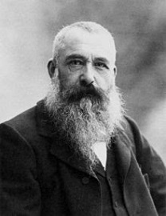
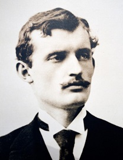
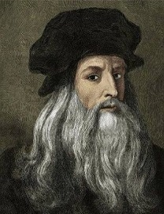
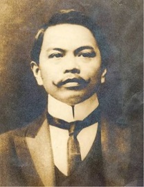
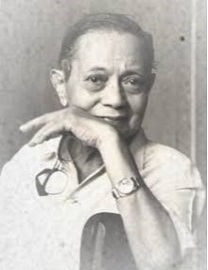
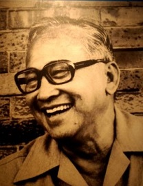
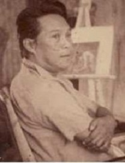
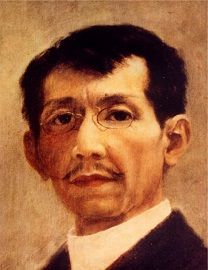

Painting is the practice of applying paint, pigment, color or other medium to a solid surface. The medium is commonly applied to the base with a brush, but other implements, such as knives, sponges, and airbrushes, can be used. The final work is also called a painting.
Famous Foreign Painters

Claude Monet

Edvard Munch

Leonardo da Vinci
Famous Filipino Artists

Juan Luna

Fernando Amorsolo

Vicente Manansala

Carlos Francisco

Félix Hidalgo
x
Claude Monet
- He is recognized as Father of Impressionism.
- He was born in Paris, France on November 14, 1840.
- He instigated one of the most important artistic movements in history, and his ground-breaking work continues to inspire the development of artists and artistic styles today.
- Among his famous paintings were "SUNRISE IMPRESSION", "HAYSTACKS", "WATERLOO BRIDGE" and "WATER LILIES.
Edvard Munch
- Most famous for his painting the Scream, he is a well-known expressionist painter from Norway.
- Munch had a troubled childhood and adolescence that can be seen in much of his work.
- Munch's paintings are full of grief, illness and death since most of his family members passed away when he was a child.
- As Munch grew as a painter, he experimented with all types of painting style including Naturalism, impressionism, and Pointillism.
- Edvard Munch's Masterpieces were "The Scream", "The Day After" and "Sun".
Leonardo da Vinci
- Leonardo di ser Piero da Vinci, more commonly Leonardo da Vinci or simply Leonardo, was an Italian polymath of the Renaissance, whose areas of interest included invention, painting, sculpting, architecture.
- Born on April 15, 1452 at Anchiano, Italy Famous works of da Vinci are MONA LISA and THE LAST SUPPER
Juan Luna
- The paintings of Juan Luna were the first Filipino works of art to become famous inside and outside of the Philippines because of its meaning and significance.
- Juan Luna produced works in the romantic and early impressionist styles, achieving great recognition in Europe.
- Among his famous paintings are Spolarium, Tampuhan and the Parisian Life
Fernando Amorsolo
- Fernando Amorsolo Y Cueto was one of the most important artists in the history of painting in the Philippines.
- Amorsolo was a portaraitist and painter of rural Philippine landscapes.
- He is popularly known for his craftmanship and mastery in the use of light.
- Among his great paintings were Planting Rice, The Making of the Philippine Flag and the Fruit Picker Under the Mango Tree.
Vicente Manansala
- Vicente Silva Manansala was a Philippine cubist painter and illustrator.
- Manansala was born in Macabebe, Pampanga. From 1926 to 1930, he studied at the U.P.
- In 1949, Manansala received a six-month grant by UNESCO to study at the Ecole de Beaux Arts in Banff and Montreal, Canada.
Carlos "Botong" Francisco
- Carlos "Botong" Francisco, National Artist for Visual Arts.
- He was born and raised in Angono, Rizal. He was affectionately called "Botong" by his family and friends.
- Hailed as Philippine National Artist for Visual Arts in 1973.
- Among his famous paintings are The Martyrdom of Rizal, Bayanihan sa Bukid at Magpupukot at Katipunan.
Félix Resurrección Hidalgo y Padilla
- He was a Filipino artist. He is acknowledged as one of the great Filipino painters of the late 19th century, and is significant in Philippine history for having been an acquaintance and inspiration for members of the Philippine reform movement which included José Rizal, Marcelo del Pilar, Mariano Ponce and Graciano López Jaena, although he neither involved himself directly in that movement, nor later associate himself with the First Philippine Republic under Emilio Aguinaldo.
- His winning the silver medal in the 1884 Madrid Exposition of Fine Arts, along with the gold win of fellow Filipino painter Juan Luna, prompted a celebration which was a major highlight in the memoirs of members of the Philippine reform movement, with Rizal toasting to the two painters' good health and citing their win as evidence that Filipinos and Spaniards were equals.